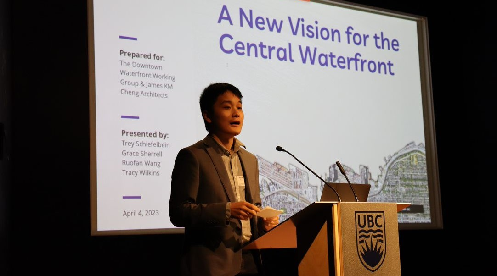

Planning Projects
Here is an assortment of projects that I've worked on over the years. This is a mix of academic, professional and personal projects that relate to geography, urban planning or urbanism more generally.
Master's Capstone: The Future of Governance at UBC
This position paper traces the history of the University of British Columbia campus' quasi-municipal status, argues against perennial calls for its amalgamation with the City of Vancouver, and proposes an alternative set of reforms to improve democratic governance without sacrificing institutional autonomy.
Keywords: Local government, multilevel governance
A New Vision for the Central Waterfront
Working with three planning classmates, we collaborated with two community partners—James K.M. Cheng Architects and the Downtown Waterfront Working Group—to create a visioning report that outlines a process to kickstart the renewal the Central Waterfront District of Downtown Vancouver.
Keywords: Urban design, project governance, visioning
Download here (External link, all rights reserved to copyright holders)
Shared micromobility research in Langley Township
The report informed the Township of Langley's exploration of a shared micromobility program (e.g. bikeshare, public e-scooters) by examining the experience of municipal staff involved in similar work in other jurisdictions, explaining the perspective of private shared micromobility operators, and profiling some potential pilot program areas. It then makes key recommendations for the design and scoping of any potential shared micromobility pilot program in the Township.
Keywords: Active transportation, policy planning, micromobility
More information here (External link, all rights reserved to copyright holders)
Honours Thesis: Conservation authorities in Ontario
My undergraduate honours thesis looked at the case of conservation authorities in Ontario to understand how governance structures and membership demographics of decision-makers can impact outcomes, using land use/land cover change as a proxy of greenfield urban development.
Keywords: GIS, multilevel governance, participatory governance, special-purpose government
Abstract here (External link)